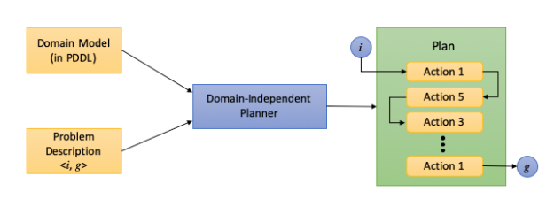
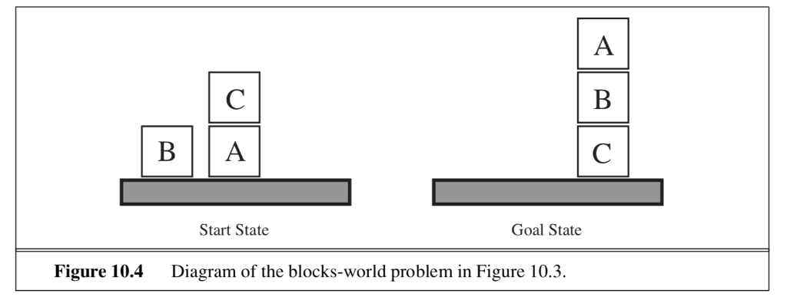

Classical Planning
Contents
Classical Planning¶
Planning Domain Definition Language (PDDL)¶
In [propositional logic-based planning]() we have seen the combinatorial explosion problem that results from the need to include in the reasoning / inference step all possible states and actions combinations over time. To avoid such explosion, with obvious benefits to the planning efficiency, we introduce a language called Planning Domain Definition Language (PDDL) that allows for compressive expressiveness at the action space via action schemas as we will see shortly. PDDL is positioned at the input of the domain independent planner as shown in the figure below.
 Planning System: A domain-independent solver or planner takes two inputs: 1) the domain model written in a planning language and 2) a problem definition that describes the initial state \(i\) and the desired goal state \(g\) using the domain model’s terminology; and produces as output a plan, that is, a sequence of actions that takes the agent from the initial state to the goal state. From here
PDDL expresses the four things we need to plan a sequence of actions. The set of all predicates and action schemas are defined in the domain file (\(\mathtt{domain.pddl}\)) as shown next.
Domain Syntax |
Description |
|---|---|
Types |
A description of the possible types of objects in the world. A type can inherit from another type. |
Constants |
The set of constants, which are objects which appear in all problem instances of this domain. |
Predicates |
A predicate is the part of a sentence or clause containing a verb and stating something about the subject. Each predicate is described by a name and a signature, consisting of an ordered list of types. Properties of the objects (contained in the problem specification) we are interested in. Each property evaluates to TRUE or FALSE. The domain also describes a set of derived predicates, which are predicates associated with a logical expression. The value of each derived predicate is computed automatically by evaluating the logical expression associated with it. |
Actions / Operators |
Actions are described by action schemas that effectively define the functions needed to do problem-solving search. The schema consist of the name, the signature or the list of all the boolean variables that are ground and functionless, a precondition and effect. The signature is now an ordered list of named parameters, each with a type. |
The precondition is a logical formula, whose basic building blocks are the above mentioned predicates, combined using the standard first order logic logical connectives. The predicates can only be parametrized by the operator parameters, the domain constraints, or, if they appear within the scope of a forall or exists statement, by the variable introduced by the quantifier. |
|
The effect is similar, except that it described a partial assignment, rather than a formula, and thus can not contain any disjunctions. |
For the famous Blocks world shown below where a robotic arm must reason to stack blocks according what the goal is, we list the corresponding domain PDDL specification.
 Blocks planning problem
In natural language, the rules are:
Blocks are picked up and put down by the arm
Blocks can be picked up only if they are clear, i.e., without any block on top
The arm can pick up a block only if the arm is empty, i.e., if it is not holding another block, i.e., the arm can be pick up only one block at a time
The arm can put down blocks on blocks or on the table
In PDDL these rules are expressed as:
;; This is the 4-action blocks world domain which does
not refer to a table object and distinguishes actions for
moving blocks to-from blocks and moving blocks to-from table
(define (domain blocksworld)
(:requirements :typing :fluents
:negative-preconditions)
(:types block) ; we do not need a table type as we use a
special ontable predicate
(:predicates
(on ?a ?b - block)
(clear ?a - block)
(holding ?a - block)
(handempty)
(ontable ?x - block)
)
(:action pickup ; this action is only for picking from table
:parameters (?x - block)
:precondition (and (ontable ?x)
(handempty)
(clear ?x)
)
:effect (and (holding ?x)
(not (handempty))
(not (clear ?x))
(not (ontable ?x))
)
)
(:action unstack ; only suitable for picking from block
:parameters (?x ?y - block)
:precondition (and (on ?x ?y)
(handempty)
(clear ?x)
)
:effect (and (holding ?x)
(not (handempty))
(not (clear ?x))
(clear ?y)
(not (on ?x ?y))
)
)
(:action putdown
:parameters (?x - block)
:precondition (and (holding ?x)
)
:effect (and (ontable ?x)
(not (holding ?x))
(handempty)
(clear ?x)
)
)
(:action stack
:parameters (?x ?y - block)
:precondition (and (holding ?x)
(clear ?y)
)
:effect (and (on ?x ?y)
(not (holding ?x))
(handempty)
(not (clear ?y))
(clear ?x)
)
)
)
The objects, the initial state and the goal specifications are defined in the problem file (\(\mathtt{problem.pddl}\)) as shown next.
Problem Syntax |
Description |
|---|---|
Initial State |
Each state is represented as conjunction of ground boolean variables. For example, $\(\mathtt{On(Box_1, Table_2) \land On(Box_2, Table_2)}\)\( is a state expression. \)\mathtt{Box_1}\( is distinct than \)\mathtt{Box_2}$. All fluents that are not specified are assumed to be FALSE. |
Goal |
All things we want to be TRUE. The goal is like a precondition - a conjunction of literals that may contain variables. |
(define (problem BLOCKS-11-0)
(:domain BLOCKS)
(:objects F A K H G E D I C J B )
(:INIT (CLEAR B) (CLEAR J) (CLEAR C) (ONTABLE I) (ONTABLE D) (ONTABLE E)
(ON B G) (ON G H) (ON H K) (ON K A) (ON A F) (ON F I) (ON J D) (ON C E)
(HANDEMPTY))
(:goal (AND (ON A J) (ON J D) (ON D B) (ON B H) (ON H K) (ON K I) (ON I F)
(ON F E) (ON E G) (ON G C)))
)
You need to experiment with this planning tool to make sure you understand what PDDL does and be familiar with the workflow of generating a plan. The blocks word problem is a classic problem employed in the International Planning Competition (IPC) 2000. For non-trivial examples where PDDL is used in e.g. robotics see ROSPlan.
Now we need to look how the planners solve the PDDL expressed problems. As it turns out many use the [Forward (state-space) Search algorithms]() where despite the factored representation assumed here, we can treat states and actions as atomic and use forward search algorithms with heuristics such as A*.